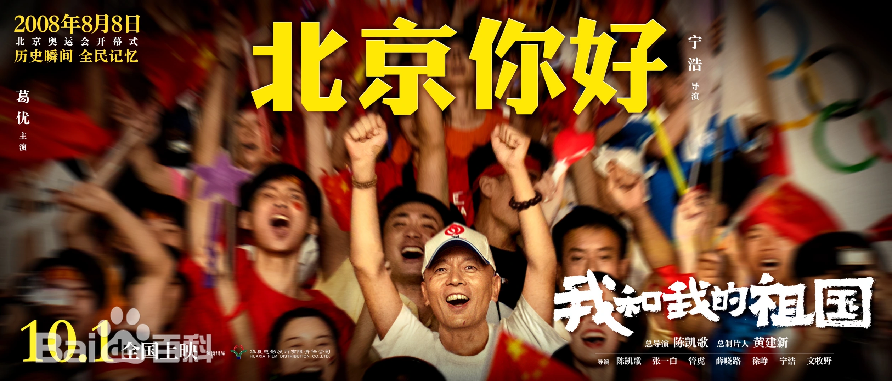

基本信息
《我和我的祖国》是在中国大陆拍摄，文宁、修梦迪担任编剧，由陈凯歌担任总导演，张一白、管虎、薛晓路、徐峥、宁浩、文牧野联合执导 ，（按出场顺序）黄渤、张译、吴京、杜江、葛优、刘昊然、陈飞宇、宋佳领衔主演的剧情片。
该片回溯新中国成立70载，讲述普通人与国家紧密相连的感人故事，用7个历史瞬间映射出新中国成立70周年的发展历程，展现普通人与国家休戚与共、同心同力的联系。
该剧于2019年9月30日在中国大陆上映。2020年1月11日，在首届“光影中国”电影荣誉盛典上获得2019年度荣誉推介电影 。同年9月26日，该片获得第35届大众电影百花奖最佳影片奖。
剧情简介
前夜
1949年10月1日中华人民共和国成立前夕，为保障开国大典国旗顺利升起，电动旗杆设计安装者林治远（黄渤饰）争分夺秒排除万难，用一个惊心动魄的未眠之夜确保立国大事“万无一失”，而护旗手老方（耿乐饰）等千千万万参与开国大典的工作人员和人民群众齐心协力，攻克了一个又一个难题，终于保障五星红旗顺利飘扬在天安门广场上空。
相遇
1964年，由于原子弹研发工作保密度极高，同事之间也互不知姓名，在国防科技战线的科研工作者高远（张译饰）三年未与家人联系，后来因病离岗，在公交车上偶遇曾经的恋人方敏（任素汐饰）。在国家大爱和情侣小爱之间，那一代科研工作者纷纷选择了前者，于是人生从此只有相遇，没有相聚。
夺冠
1984年8月8日，中国女排在1984年洛杉矶奥运会夺冠，首获世界大赛三连冠。而与此同时的上海石库门弄堂，黑白电视机摆在弄堂中间，前排马扎、中间椅子、后面踮起脚尖，邻居们层层叠叠聚在一起观看那场振奋人心的比赛，房顶的天线时不时需要有人手动寻找信号，每当中国队得分，欢呼声仿佛能穿破天际。
回归
1997年7月1日，香港回归祖国。为确保五星红旗分秒不差飘扬在香港上空，升旗手朱涛（杜江饰）刻苦训练不懈怠、女港警莲姐（惠英红饰）兢兢业业守平安、外交官安文彬（王洛勇饰）与英国人谈判16轮分秒不让、修表匠华哥（任达华饰）以精湛的技术确保中英方代表与女港警手表精准确对。他们是中方外交官、仪仗队军人、香港警察、钟表师傅，身份不同，但他们有一个共同的心愿——在7月1日0点0分准时升起五星红旗。他们在各自的岗位竭尽全力，只为保证香港回归“一秒不差”。
北京你好

出租车司机张北京（葛优饰）意外获得一张千金难买的北京奥运会开幕式门票。得意洋洋并开启显摆模式的张北京却没想到因为这张门票遭遇了一系列啼笑皆非的风波。在炫耀一圈后，他遇见了吃着沙琪玛坐出租的四川男孩（王东饰）。男孩不知人情世故，悄悄用800元钱，换走了张北京的奥运会开幕式门票。
白昼流星
迷茫落魄的一对少年流浪兄弟沃德乐（刘昊然饰）与哈扎布（陈飞宇饰）在遇到退休扶贫办主任老李（田壮壮饰）后，他们的生活悄然发生了变化。在老李善意的引导下，他们见证了神舟十一号飞船成功着陆这一重大历史瞬间，也见到了草原寓言中的“白昼流星”，内心受到了极大冲击和洗礼。
护航
吕潇然（宋佳饰）作为中国空军飞行队中最优秀的女飞行员，在2015年9月3日纪念抗战胜利70周年阅兵式之前却被意外通知撤出阅兵编排留作替补。当一架架战斗机滑行起飞，剑指长空临近检阅，作为“备飞”的吕潇然在见证这一荣耀时刻的同时，也完成了自己的使命。
人民网评
《我和我的祖国》带领观众们重温了新中国70年的峥嵘岁月，让观众们深刻体会到“我”与中国的血脉相连，激发了观众们内心最朴素的爱国情怀。《我和我的祖国》既是一部献礼的影片，更是一封写给祖国的情书，用“我”的故事、“我”的经历、“我”的感动向祖国表白：此生无悔入华夏！
北京师范大学艺术与传媒学院教授、博士生导师杨乘虎 评
面对高昂宏大的礼赞主题，《我和我的祖国》以小见大，塑造了身处大时代的“小人物”群像。该片既有取材史实的真实人物，如开国大典自动升旗装置设计师、香港回归仪式升旗手、原子弹研究人员、舍己扶贫基层干部、备飞护航女飞行员；也有大胆创设的艺术形象，如上海里弄小男孩、北京出租车司机、迷途知返的失足青年等。这些在大事件中鲜为人知的小人物，默默无闻而又矢志不渝地将“小我”的人生篇章，无私地融入共和国的“大我”华章中。他们所承载的奉献、牺牲、拼搏、捍卫、坚守的时代精神，穿越时空，历久弥新，凝聚成为“我和我的祖国，一刻也不能分隔”的坚强信念，也生动地表达着“历史是人民写就的”价值主题。该片一方面是类型化叙事手法的纯熟应用，既有传统电影叙事手法经典再现，也不乏商业类型片悬念叙事的娴熟应用，多种叙事手法交互作用，让故事的讲述饶有趣味，有效调动了观影的愉悦度，另一方面是风格化叙事艺术的成功把握，让该片的基调始终较好地控制在质朴深情、温暖奋进的向度上，不仅营造了富有历史阶段的生活质感与时代氛围，如里弄、胡同、市井的生活景观，家用电器上留存的生活方式，而且呈现了广阔的社会场景与生活容量。大量使用关键性细节对于叙事的引导作用也起到了不容低估的效用，比如“前夜”中旗杆上的阻断球、“回归”中的钟表、“夺冠”中的电视天线、“北京你好”中的奥运会门票。细节叙事的精巧设计，令故事饱满有力。
《新京报》评
不少观众担心该片可能会有说教味、太刻板，但实际上，《我和我的祖国》却很接地气、很平实。《我和我的祖国》虽然以重大历史事件为背景，但它的切入点非常巧妙——它关注的是“我”，千千万万普通人中的你我他，以大历史中“我”的故事，来讲述那段岁月，实现个体与宏大时代的共鸣。《前夜》单元采取的是“最后一分钟营救”的叙事手法，一个小短片拍得一波三折，惊心动魄，感人至深。而在张一白执导的《相遇》单元里，观众们更能深切感受到“我分担着海的忧愁”的那种敢于奉献与牺牲的精神。虽然张一白并没有把这个故事拍得太“抒情”，但它依旧感人至深。
上海文艺评论专项基金评
要和观众产生共鸣，文艺作品就应该被落点设置为生活。《我和我的祖国》中的7个故事，无疑都在努力向这个方向靠拢。即使是相对争议最大的《白昼流星》单元，也把“扶贫”“自强”等大主题承载于两个顽劣少年和一位普通干部身上。不管呈现出的效果如何，7部在剧情上并无联系的短片在这一点上达成了一致。可惜的是，部分短片还是被过大、过重的意义吞没了，以至于作品中的人物只剩下符号意义，而没能显示出更鲜活的生命力。比如《相遇》中的张译和任素汐，两人的演技都很过硬，身处的场景也很动人，但最终还是没能展现出两个角色的个性所在。这样的遗憾也出现在《回归》和《护航》里。前者的问题是线索过多，叙事过乱，在短短二十分钟的篇幅里导演什么都想讲，结果什么都成了点到为止。而在《护航》里，女飞行员的能挺过高强度测试，靠的不是严格训练，也不是刻苦学习，多少让观众感到不可信。如果能赋予这个人物更多个性化色彩，整个故事显然会更出彩。《前夜》和《夺冠》都把激动人心的历史时刻化解为普通人的喜怒哀乐，令人眼前一亮。《前夜》这部短片的角度选取，可谓巧妙。略微不足的是，群像戏本来能给《前夜》增添光彩，但除了林治远外，其他人的面目还是模糊了些。当然，这或许还是受制于篇幅的关系。《夺冠》里的小主人公，就更可爱了。徐峥对上海市井文化的拿捏，恰到好处，既突出了那个时代的爱国热情，又展现了邻里之间的那点温情。可以说，浓郁的生活气息，是这部短片获得成功的基石。《北京你好》这个故事本身，并不比《前夜》或者《夺冠》更优秀。但葛优的加盟，让这部短片瞬间脱颖而出。张北京这个人物，亮眼的地方不在于他接地气的“嘚瑟”，也不在于他被汶川少年感动时的善良，而就在他敢于自嘲、自黑的那份勇气里。看得出，葛优的很多表演浑然天成，代入了不少自身对角色的理解和感悟 。